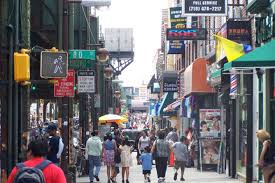

Jackson Heights
Jackson Heights is a vibrant and diverse neighborhood in Queens, New York. It's known for its rich cultural mix, delicious food scene, and beautiful architecture.
- Visit the Jackson Heights Diversity Plaza
- Explore the many shops and restaurants on Roosevelt Avenue
- Check out the historic architecture of the neighborhood
